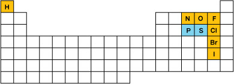

The molecular elements are bonded together as pairs (diatomic elements) or in groups of three, four, or eight (polyatomic elements). There are ten molecular elements that you need to memorize. Seven are diatomic molecular elements. This means they are found as pairs of atoms when in their natural state. These elements include
nitrogen N2(g)
oxygen O2(g)
fluorine F2(g)
chlorine Cl2(g)
bromine Br2(l)
iodine I2(s)
hydrogen H2(g)
Polyatomic elements include the following:
phosphorus, found in nature as P4(s)
sulfur, found in nature as S8(s)
oxygen, in the form of ozone, O3(g)
One way to remember the seven diatomic elements is to start at element 7 (nitrogen) on the periodic table, and trace a "7" (move right to fluorine and then down to iodine). Counting the elements in the “7” shape, you will find six elements. The seventh is hydrogen—it is way up in the top left-hand corner of the periodic table.

Another way to remember the diatomic elements is that they all end in either -ine (fluorine, chlorine, bromine, iodine) or -gen (hydrogen, nitrogen, oxygen). For the polyatomic elements, you may find it helpful to remember that phosphorus and sulfur are found beneath the top part of the “7” shape.
Molecular compounds are composed of at least two different non-metals. Examples of molecular compounds are water (H2O), glucose (C6H12O6), carbon dioxide (CO2), and propane (C3H8).
Naming binary molecular compounds requires the use of prefixes to indicate the quantity of particular atoms within the compound. Molecular compounds involving nitrogen and oxygen provide excellent examples of how the naming system is applied.
N2O5 = dinitrogen pentaoxide
N2O4 = dinitrogen tetraoxide
In these two examples, prefixes must be used for both nitrogen and oxygen since they both have subscripts. The ending for a molecular compound is -ide; so, the second atom name must change to accommodate this.
NO2 = nitrogen dioxide
Nitrogen does not have a subscript, so no prefix is required. Oxygen does have a subscript and, therefore, requires a prefix.
NO = nitrogen monoxide
Nitrogen does not have a subscript, so no prefix is required. Oxygen does not have a subscript either; but since it comes second, it must be written with the prefix mono-.
In this course you must memorize the listed prefixes.
Number of Atoms |
Prefix |
|---|---|
1 |
mono- |
2 |
di- |
3 |
tri- |
4 |
tetra- |
5 |
penta- |
6 |
hexa- |
7 |
hepta- |
8 |
octa- |
9 |
nona- |
10 |
deca- |
These guided examples will give you further insight into naming molecular compounds.
What is the name for CCl4?
Notice that there is one carbon atom and four chlorine atoms. Since there is only one carbon atom and it is the first atom in the formula, the first part of the name is simply carbon (no mono- prefix). Four chlorine atoms are represented by tetrachloride. Therefore, CCl4 is carbon tetrachloride.
To write the formula from the compound name, reverse the process.
What is the chemical formula for trisulfur hexaiodide?
The prefix tri- indicates that there are three atoms of sulfur. The prefix hexa- indicates there are six atoms of iodine. Therefore, the chemical formula is S3I6.
Unlike ionic compounds, molecular compounds are not written with the lowest possible ratio. The following example illustrates why:
C2H2 is commonly called acetylene and is used in welding.
C6H6 is commonly called benzene and is used as an industrial solvent.
These are two very different molecular compounds that would both reduce to CH in the simplest ratio. If you found a container labelled CH, how would you know what it is? Remember that ionic compounds reduce to the simplest ratio but molecular compounds do not.
You may have noticed that states have not been discussed when dealing with molecular compounds. States of molecular compounds do not follow simple rules and may be found in solid, liquid, and gaseous states at SATP. Other than memorizing the states of common molecular compounds, there is no easy way to determine their states.